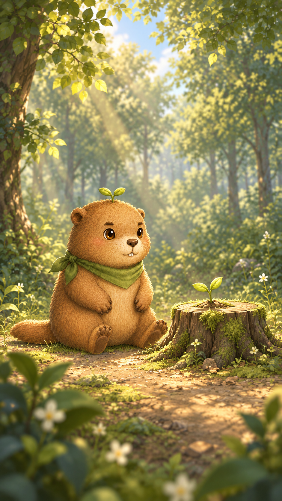
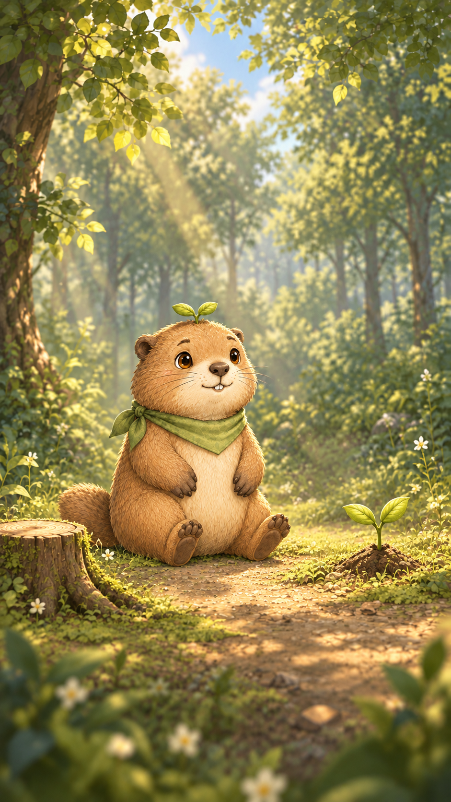

Lv1 Forest Clearing · visual weight check
同一手機比例檢視：HF-01 原型與 Character Canon V2 校準後清場雛型。

HF-01 before calibration
既有高質感原型，角色仍待 Canon V2 校準

Lv1 Canon V2 calibrated clearing
Canon V2 土撥鼠 · 左側樹樁 · 右側原生嫩芽